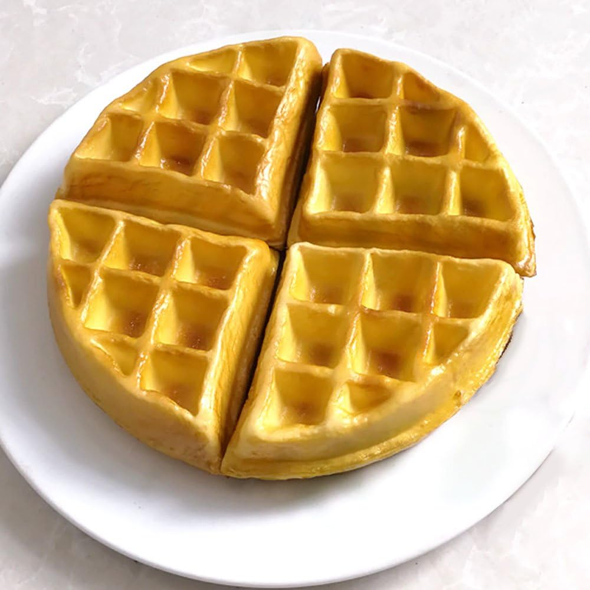

Waffles

Description
Who doesn't love a good waffle? This recipe will make a wonderful waffle perfect for your weekend mornings.
Ingredients
- 1 cup self-rising flour (White Lily is best)
- 4 tbsp corn starch
- 1 tsp baking soda
- 2 tbsp unsalted butter, melted
- 1 1/4 cups buttermilk
- 1 egg
Steps
- Add dry ingredients into a bowl and stir to combine
- Make a well in flour mixture, and add in wet ingredients
- Stir only enough to combine - lumps are okay!
- Pour enough batter to fill your waffle-maker
- Cook according to waffle-maker instructions
- Eat and enjoy!